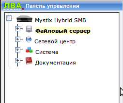
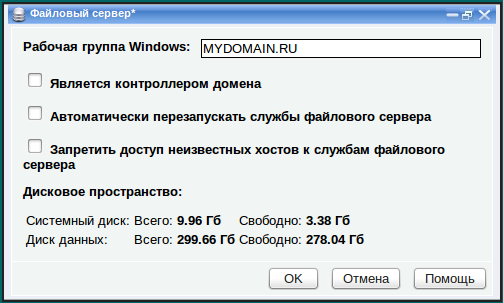
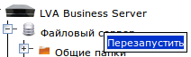

Основные параметры файлового сервера
Для установки и изменения основных параметров сервера используется
Панель управления сервером. В разделе "
Подключение
сервера" описано,
как к ней подключиться.

Для отображения основных параметров сервера нажмите левой кнопкой мыши
по разделу "Файловый сервер".

- Рабочая группа WINDOWS
-
рабочая группа, внутри которой будет отображаться сервер в Сетевом
окружении. В большинстве случаев рекомендуется указывать такое же имя,
как и имя домена, особенно, если сервер является контроллером домена.
- Является
контроллером домена - при включении этого флажка сервер
становится первичным контроллером домена. Имя рабочей группы сервера
становится именем домена. После включения этого флажка сервер готов к
регистрации рабочих станций сети в качестве членов домена и
предоставлять членам домена свою базу данных учетных записей
пользователей и групп, которую они будут использовать для входа в свои
компьютеры и в домен.
- Автоматически перезапускать службы файлового сервера - при создании общих папок, хостов, пользователей и групп,
вы вносите изменения в конфигурацию служб файлового сервера. Чтобы
файловый сервер "увидел" эти изменения, он должен перечитать свою
конфигурацию. Для этого нужно перезапустить службы файлового сервера.
Если этот флажок включен, перезапуск служб происходит автоматически при
применении любых изменений, связанных с файловым сервером: в окне
редактирования параметров общей папки, пользователя или группы. Такое
поведение позволяет добиться моментальной реакции сервера на ваши
действия, однако это не всегда удобно, а иногда даже не допустимо, так
как перезапуск файлового сервера может прервать работу клиентов,
работающих с ним. Если выключить флажок "Автоматически перезапускать
службы файлового сервера", службы не будут автоматически
перезапускаться при изменениях в конфигурации и для того, чтобы сервер
узнал об изменениях, нужно перезапускать его вручную. Для этого нужно нажать правой кнопкой мыши по значку "Файловый сервер" в дереве и выполнить команду "Перезапустить" из контекстного меню:

Если этот флажок выключен, файловые службы автоматически не перезапускаются во всех случаях кроме следующих:
В этих трех случах службы файлового
сервера перезапускаются независимо от состояния флажка. В этих случаях
перезапуск файловых служб необходим для продолжения работы, а при
внесении некоторых особых изменений в этих окнах, необходима полная
перезагрузка сервера (например, см. последний абзац данного раздела).
- Запретить доступ неизвестных хостов к службам файлового сервера
- этот флажок имеет смысл включать только если в конфигурации вашего
сервера предусмотрен "Сетевой центр" и в нем заведены все хосты,
которые должны иметь доступ к общим папкам на сервере. Если включить
этот флажок, то сервер включит межсетевой экран, который заблокирует
доступ к себе всем, кроме устройств, зарегистрированных в Сетевом
центре. Это позволяет повысить безопасность файлового сервера, потому
что происходит полная блокировка доступа к портам файловых служб
(UDP/111, UDP/137, UDP/138, TCP/111, TCP/139, TCP/445, TCP/548).
Также, внизу окна отображается
информация о
дисковом пространстве
файлового сервера. Жесткий диск сервера разбит на два раздела:
системный диск и
диск данных.
На системном диске находится операционная система, панель управления и
другие утилиты. На диске данных находятся все данные, которые находятся
в общих папках сервера.
Диск данных может заполняться данными, которые пользователи размещают
на сервере в общих папках, поэтому свободное пространство на нем может
уменьшаться. Пространство на системном диске не должно уменьшаться или
его уменьшение должно быть незначительно (+/- 200 Мб). Если вы
обнаружили что свободное пространство на системном диске начало резко
уменьшаться, срочно свяжитесь с отделом технической поддержки компании
ЛВА, чтобы разобраться с этой проблемой.
Также на диске 2 Гб выделено на
раздел подкачки (виртуальной памяти). Это пространство не указывается
на панели управления.
После изменения параметров нажмите OK.
Если в данных не будет
обнаружено ошибок, окно закроется. Возможно, на обработку введенных
параметров потребуется некоторое время.